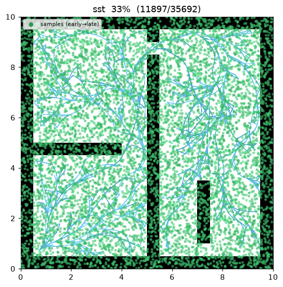
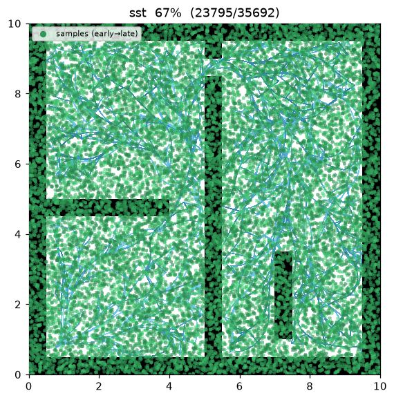
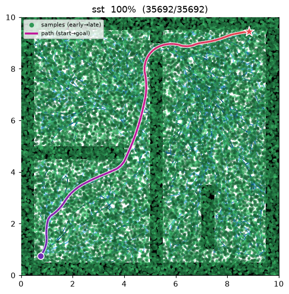
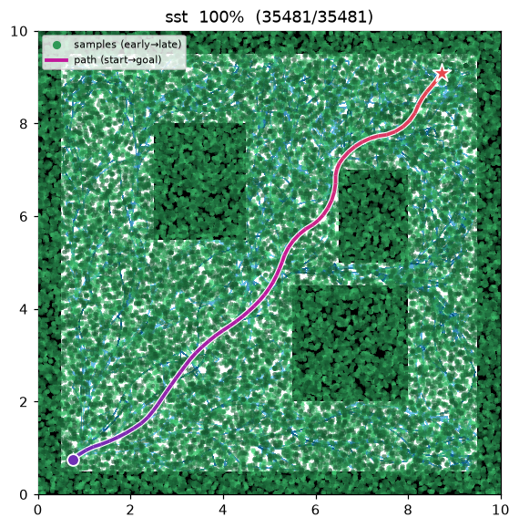

SST / SST* (Stable Sparse RRT)¶
| Item | Description |
|---|---|
| Category | sampling-based, kinodynamic, single-query, anytime |
| Required capability | SamplingSpace |
| Completeness | probabilistically complete (asymptotically, under forward propagation) |
| Optimality | SST: near-optimal (bounded); SST*: asymptotically optimal (shrinking radii) |
| Complexity | per iteration: BestNear over the sparse active set + one forward propagation + witness query |
| Original paper | Li, Littlefield & Bekris (2016) 1 |
Background¶
Optimal sampling planners such as RRT* rely on a steering function — an exact solution to the two-point boundary-value problem (BVP) that connects any two states. For systems with non-trivial dynamics that BVP is expensive or has no closed form. Li, Littlefield & Bekris1 observed that a planner can stay asymptotically (near-)optimal using only forward propagation — integrate a control forward and check collisions — with no steering at all, provided the tree is kept sparse.
SST grows a tree by propagating a random control for a random duration from a carefully chosen node. Two ideas make it "stable" and "sparse":
- BestNear selection — instead of the single nearest node, the parent to expand is the
lowest-cost active node within a ball of radius
delta_bnaround the sample. Expanding cheap nodes drives the incumbent cost down (stability). - Witness-set pruning — a set of witness points, spaced at least
delta_sapart, each keep a single active representative: the lowest-cost node in itsdelta_sball. A new node is kept only if it improves on its witness's representative; the dominated representative is deactivated and, with its now-leaf inactive ancestors, pruned. This bounds the number of active nodes regardless of iteration count (sparsity).
SST* shrinks delta_bn and delta_s over iterations (a schedule), which lets the sparse tree keep
refining and recovers asymptotic optimality. The same class provides both: sst_star = false is SST
(fixed radii), sst_star = true is SST*.
How It Works¶
maze01 — a unicycle (state (x, y, θ), controls (v, ω)) forward-propagates random arcs. The dense green
cloud is the drawn samples; the sparse sky-blue tree underneath is the active set the witnesses cap.
The final path is a smooth, dynamically-feasible trajectory (not a straight-line steer path).

Intermediate search progress (left → right: early / middle / final path):
 |
 |
 |
Final result on open01 — a smooth curved trajectory near the straight-line optimum:

SST(start, goal):
V_active ← {start}; S ← {witness(start) → rep=start} # witness set
for i in 1..max_iterations: # anytime
s_sample ← (goal with prob. goal_bias) else sample()
x_sel ← BestNear(V_active, s_sample, delta_bn) # min-cost in ball (else nearest)
x_new, arc ← MonteCarloProp(x_sel) # random (v, ω) for random duration
if arc collides: continue # forward-propagation only, no steer
w ← nearest_witness(x_new)
if dist(x_new, w) > delta_s: S.add(witness(x_new) → rep=∅) # new witness
x_peer ← rep(witness of x_new)
if x_peer = ∅ or cost(x_new) < cost(x_peer): # locally best?
V_active.add(x_new); rep(witness) ← x_new
if x_peer ≠ ∅: deactivate x_peer; prune inactive leaf ancestors # bound the tree
if dist(x_new, goal) ≤ goal_tolerance:
best ← min(best, cost(x_new)) # keep improving the incumbent
return best
Measurements (seed = 1, 30,000 iterations, trace on):
| map | Language | path cost | active nodes | nodes added | runtime |
|---|---|---|---|---|---|
| maze01 | Python | 13.683 | 198 | 1,286 | 1.20 s |
| open01 | Python | 12.005 | 186 | 1,226 | 1.19 s |
The gap between active nodes (198 / 186) and nodes added (1,286 / 1,226) is exactly the witness
pruning at work: over four in five accepted nodes are later dominated and pruned, so the active tree
stays tiny while a naive RRT would retain every node. open01's cost (12.005) sits within ~0.1% of the
straight-line lower bound (≈12.02). The C++ port mirrors the algorithm but draws from an independent
std::mt19937 stream, so its exact numbers differ (build with CMake to reproduce).
Reproduce:
python python/demos/demo_sst.py \
--map maps/grid/maze01.yaml --scenario maps/scenarios/maze01_s1.yaml \
--params configs/global_planning/sst.yaml --trace out/sst.jsonl
python tools/viz/replay.py out/sst.jsonl --gif out/sst.gif
Properties¶
- No steering / BVP solver. SST needs only forward propagation + collision checks, so it applies to
systems where connecting two states exactly is hard1. Here the model is a unicycle; the planner
owns the dynamics, and the map only answers state / motion validity (
SamplingSpace). - Sparsity is bounded. The witness set caps the active-node count by the number of
delta_s-separated witnesses (≈ free-space area /delta_s²), independent ofmax_iterations. - Anytime, monotone incumbent. BestNear + the "keep only if it improves the representative" rule make every representative's cost non-increasing, so the best solution never gets worse.
- Optimality. Fixed radii (SST) give a near-optimal solution with a bound tied to
delta_bn/delta_s; the shrinking schedule (SST*) recovers asymptotic optimality1.
Parameters¶
| Name | Type | Default | Range | Description |
|---|---|---|---|---|
max_iterations |
int | 30000 | [1, 2000000] | Iteration budget (anytime — current best is returned when exhausted) |
goal_bias |
float | 0.1 | [0.0, 1.0] | Probability of sampling the goal directly |
goal_tolerance |
float | 0.6 | [0.0, 100.0] | Goal-reached radius (m, position only) |
delta_bn |
float | 1.2 | [0.01, 100.0] | BestNear radius δ_BN (m) — min-cost active node ball |
delta_s |
float | 0.5 | [0.01, 100.0] | Witness / sparsification radius δ_s (m) — active-node density cap |
max_velocity |
float | 1.5 | [0.01, 100.0] | Forward speed v upper bound (m/s); sampled in [0, v_max] |
max_omega |
float | 1.5 | [0.0, 100.0] | Yaw rate ω upper bound (rad/s); sampled in [−ω_max, ω_max] |
prop_duration_min |
float | 0.2 | [0.001, 100.0] | Propagation duration lower bound (s) |
prop_duration_max |
float | 0.8 | [0.001, 100.0] | Propagation duration upper bound (s) |
sst_star |
bool | false | — | true → SST* (shrink δ_BN / δ_s over iterations for asymptotic optimality) |
seed |
int | 1 | [0, 2³¹−1] | Random seed (reproducibility) |
Emitted Trace Events¶
planning_started → (sample_drawn, edge_added, rewire?) → path_found* → planning_finished
edge_added is emitted per arc chord so the curved propagation renders smoothly; rewire marks a
witness representative moving to a cheaper node (the dominated branch is pruned away), so the replay
shows the tree staying sparse. path_found can be emitted multiple times (each incumbent improvement).
References¶
-
Li, Y., Littlefield, Z., & Bekris, K. E. (2016). "Asymptotically optimal sampling-based kinodynamic planning." The International Journal of Robotics Research, 35(5), 528–564. doi:10.1177/0278364915614386 · PDF (arXiv) ↩↩↩↩